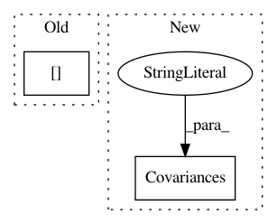

16c7e51056f2361cef21ebcb0a0c02bb20a89623,examples/MotorImagery/two_class_motor_imagery.py,,,#,16
Before Change
mp.AverageCovariance(estimator="oas"), TSclassifier())
pipelines["av+CSP+LDA"] = make_pipeline(
mp.AverageCovariance(estimator="oas"), CSP(8), LDA())
pipelines["FBCSP+LDA"] = make_pipeline(
mp.MultibandCovariances(estimator="oas"), mp.FBCSP(), LDA()) //
results = context.process(pipelines, overwrite=True)
After Change
pipelines = OrderedDict()
pipelines["av+TS"] = make_pipeline(Covariances(estimator="oas"), TSclassifier())
pipelines["av+CSP+LDA"] = make_pipeline(Covariances(estimator="oas"), CSP(8), LDA())
results = context.process(pipelines, overwrite=True)
In pattern: SUPERPATTERN
Frequency: 3
Non-data size: 2
Instances
Project Name: NeuroTechX/moabb
Commit Name: 16c7e51056f2361cef21ebcb0a0c02bb20a89623
Time: 2018-03-28
Author: alexandre.barachant@gmail.com
File Name: examples/MotorImagery/two_class_motor_imagery.py
Class Name:
Method Name:
Project Name: NeuroTechX/moabb
Commit Name: bd7fb0b678678a421e2feb2a850aa17721128a12
Time: 2018-02-27
Author: vjayaram@danube.is.localnet
File Name: examples/MotorImagery/two_class_motor_imagery.py
Class Name:
Method Name:
Project Name: NeuroTechX/moabb
Commit Name: 028274e8f52c54b10d632a61ee19a6e64f7a90e6
Time: 2018-02-14
Author: vjayaram@danube.is.localnet
File Name: examples/MotorImagery/two_class_motor_imagery.py
Class Name:
Method Name: